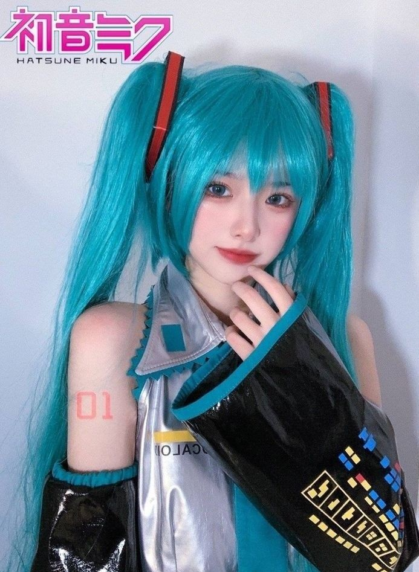

Hatsune Miku influenciou muitas linhas de moda com sua estética futurista. Existem peças de roupas, como camisetas, jaquetas e acessórios, que são oficialmente licenciados pela Crypton Future Media.
O cosplay de Hatsune Miku é um dos mais populares em convenções ao redor do mundo. A personagem tem muitos trajes diferentes, desde seu visual clássico até variações de colaborações especiais, como Racing Miku ou Snow Miku.
